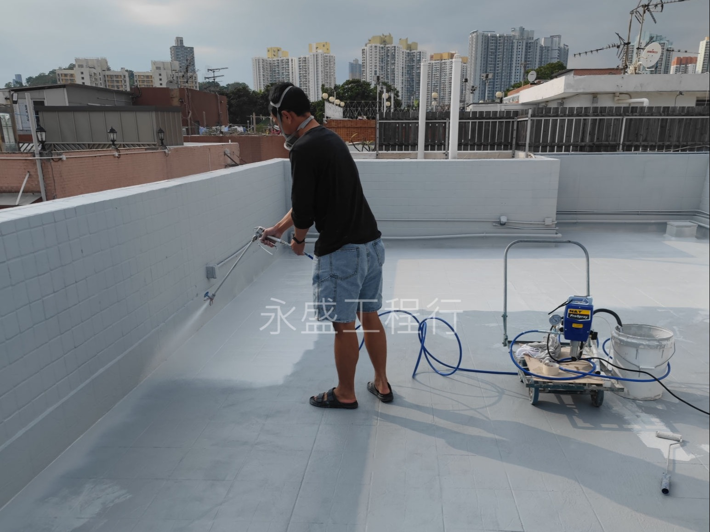
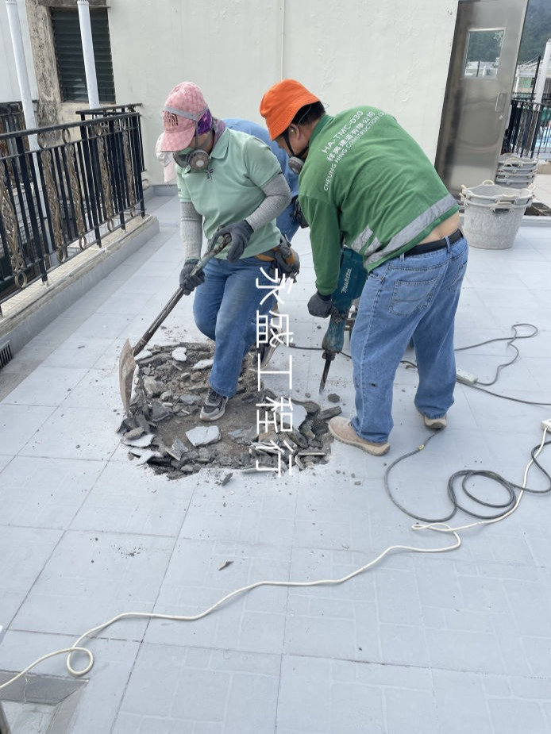

專業防水公司提供：表面防水塗層 · 打拆起底重做

專業防水師傅正在施作天台防水塗層。
表面防水塗層是快速且經濟的防漏工程方案，適合防水層輕微老化的情況。
對於嚴重的屋頂防水失效，打拆起底重做是唯一能根治天花漏水的方案。

專業清拆師傅正在打拆老化天台防水層。
永盛工程行
WING SHING ENGINEERING COMPANY
UNIT1, 7/F, BLK D, MAI WAH IND BLDG, KWAI CHUNG
天台作為建築物的「第一道防線」，長期承受風吹雨打、烈日曝曬。在香港，天台滲漏是導致頂層住戶天花漏水、鋼筋生鏽甚至混凝土剝落的主要原因。作為一家資深的香港防水公司，永盛工程行深知天台防水對維護物業價值的重要性。
天台防水並非一勞永逸。常見的防水材料如瀝青、防水膠或卷材，在長期紫外線照射下會發生脆化、龜裂。加上香港溫差大，建築結構的熱脹冷縮會導致微細裂縫產生。如果當初施工時基面處理不乾淨，或者防水層厚度不足，水份就會順著裂縫滲入石屎層，引發嚴重的屋頂防水危機。這也是為什麼許多業主反映維修後不到一年又再漏水的核心原因。
當發現滲漏時，許多業主為了節省防水工程價錢，傾向於局部補膠。但對於天台而言，這往往只是治標不治本：
永盛工程行在執行每一宗天台防水工程時，均遵循嚴謹的行業標準。除了前述的打拆與清理，我們更注重：
村屋防水與一般住宅大廈不同。村屋天台往往承載著太陽能板架、熱水爐及各種喉管。這些穿透點（Penetration points）是最容易發生滲漏的位置。專業的防漏工程必須針對這些細部進行加強封堵，並確保天台排水口（落水口）暢通，防止因積水而導致的滲透。
定期進行防水保養能有效延長建築壽命。我們建議業主每年在雨季前進行一次基礎的防水巡檢。如果您不確定「防水公司邊間好」，可以參考我們的成功案例。永盛工程行憑藉先進的紅外線漏水檢測儀器，能為您及早發現肉眼難見的隱患。
不要讓天台滲漏損毀您的家居裝修。選擇值得信賴的專業香港防水公司，才能真正還您一個乾爽舒適的環境。立即聯絡永盛工程行，獲取您的專屬天台防水報價方案！